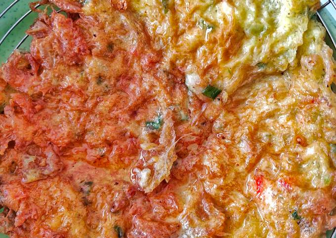

Telor Dadar

Deskripsi
Telur dadar (juga dieja omelet ) adalah hidangan yang terbuat dari telur , digoreng dengan mentega atau
minyak
dalam wajan . Telur dadar biasanya berisi isian seperti daun bawang , sayuran , jamur , daging (sering kali
ham
atau bacon ), keju , bawang bombai , atau beberapa kombinasi dari bahan-bahan di atas.
Bahan-bahan
- 2 butir telur ayam
- 1 batang daun bawang
- 3 buah cabai (opsional)
- 2 butir bawang putih
- Secukupnya garam
- Secukupnya penyedap rasa
- Secukupnya lada bubuk
Cara Membuat
- Potong2 daun bawang dan cabai rawit
- Haluskan bawang putih dan sedikit garam
- Pecahkan 2 butir telur, lalu tambahkan bumbu halus, penyedap, lada bubuk, cabai, dan daun bawang.
- Kocok lepas, dan cek rasa.
- Tuang telur ke dalam minyak yang sudah panas, tunggu sampai keemasan dan balik, lalu tunggu kembali
sampai coklat keemasan
- Telur dadar siap untuk disajikan.
Back To Top
Back To Home Page